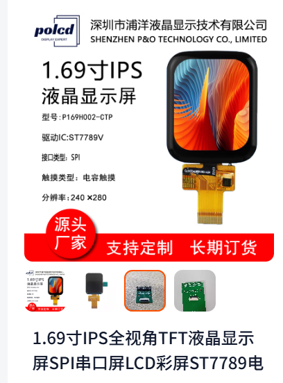

<!DOCTYPE lake>
<p data-lake-id="u61e59814" id="u61e59814"><br/></p><a class="yuque-card-link" href="https://player.bilibili.com/player.html?bvid=BV1cZ39zYENt&amp;autoplay=0" rel="noopener noreferrer" target="_blank">thirdparty：thirdparty</a><p data-lake-id="u9417273d" id="u9417273d" style="text-align: center"></p><h3 data-lake-id="TrfnP" data-lake-index-type="2" id="TrfnP"><span data-lake-id="u51ad2260" id="u51ad2260">导包</span></h3><span class="yuque-card-unsupported">[codeblock]</span><h3 data-lake-id="ctrgb" data-lake-index-type="2" id="ctrgb"><span data-lake-id="uac738137" id="uac738137">导入屏幕显示配置</span></h3><span class="yuque-card-unsupported">[codeblock]</span><h4 data-lake-id="voSZS" data-lake-index-type="2" id="voSZS"><span data-lake-id="u15fbe641" id="u15fbe641">初始化屏幕</span></h4><span class="yuque-card-unsupported">[codeblock]</span><h3 data-lake-id="ZOb7J" data-lake-index-type="2" id="ZOb7J"><span data-lake-id="u6a4c03e1" id="u6a4c03e1">导出屏幕触摸部分配置</span></h3><span class="yuque-card-unsupported">[codeblock]</span><h3 data-lake-id="HeOZs" data-lake-index-type="2" id="HeOZs"><span data-lake-id="u5c2f257f" id="u5c2f257f">开启LVGL事件渲染机制(重要)</span></h3><span class="yuque-card-unsupported">[codeblock]</span><p data-lake-id="u3dbae99b" id="u3dbae99b"><br/></p><h3 data-lake-id="MAhTT" data-lake-index-type="2" id="MAhTT"><span data-lake-id="ua8308878" id="ua8308878">获取当前屏幕</span></h3><span class="yuque-card-unsupported">[codeblock]</span><h3 data-lake-id="A84BZ" data-lake-index-type="2" id="A84BZ"><span data-lake-id="ubdf2322b" id="ubdf2322b">测试helloworld</span></h3><span class="yuque-card-unsupported">[codeblock]</span><p data-lake-id="ud6e529f0" id="ud6e529f0"><br/></p>